6 Plotting
6.1 R Graphics Structure
Plotting packages like ggplot2 are only the top of four “layers” in R’s graphics structure:

| Layer | Function | Examples |
|---|---|---|
| Graphics Packages | High-level, user-facing plotting systems | ggplot2, lattice |
| Graphics Systems | Maintaining plotting state, coordinating the construction of graphical objects using instructions from plotting packages | grid, graphics |
| Graphics Engines | Interface between graphics systems and graphics devices, handle resizing and displaying plots, maintaining “display lists” - record of function calls used to make plot, maintain an array of graphics devices | grDevices |
| Graphics Devices | Maintain a plotting window, implement a series of “graphical primitives” like circles, lines, colors, etc. | X11, pdf, png |
While most, if not all programming languages and data manipulation software allow plotting, this system makes R graphics particularly permissive – if the system can’t already make the plot you want, it is possible to code it yourself.
It is possible to get away with just knowing the top-level graphics packages, but understanding the full system is critical for making publication-quality figures. Without understanding grid, one cannot add custom labels or layouts to ggplot2 plots; without understanding graphics devices, it may be unclear why saving as a pdf allows one to edit individual plot elements in Illustrator while png does not.
6.2 Base graphics
Base R graphics are made with a series of function calls, typically starting with a function that ‘creates’ the plot (like, say, plot()), and subsequent functions that modify that same plot. par() is used to set graphical parameters. Paul Murrell has compiled a mnemonic table to help remember the different parameters of par().
We won’t discuss base graphics in much detail, as I haven’t seen a situation where using ggplot2 isn’t a better idea.
(An example from https://www.stat.auckland.ac.nz/~paul/RG2e/examples-stdplots.R)
# Scatterplot
# make data
x <- c(0.5, 2, 4, 8, 12, 16)
y1 <- c(1, 1.3, 1.9, 3.4, 3.9, 4.8)
y2 <- c(4, .8, .5, .45, .4, .3)
# Set axis label style (las), (mar)gins, text size (cex)
par(las=1, mar=c(4, 4, 2, 4), cex=.7)
# Create the plot and add objects
plot.new()
plot.window(range(x), c(0, 6))
lines(x, y1)
lines(x, y2)
points(x, y1, pch=16, cex=2)
points(x, y2, pch=21, bg="white", cex=2)
# Further parameter adjustments
par(col="gray50", fg="gray50", col.axis="gray50")
axis(1, at=seq(0, 16, 4))
axis(2, at=seq(0, 6, 2))
axis(4, at=seq(0, 6, 2))
box(bty="u")
mtext("Travel Time (s)", side=1, line=2, cex=0.8)
mtext("Responses per Travel", side=2, line=2, las=0, cex=0.8)
mtext("Responses per Second", side=4, line=2, las=0, cex=0.8)
par(mar=c(5.1, 4.1, 4.1, 2.1), col="black", fg="black", col.axis="black")
text(4, 5, "Bird 131")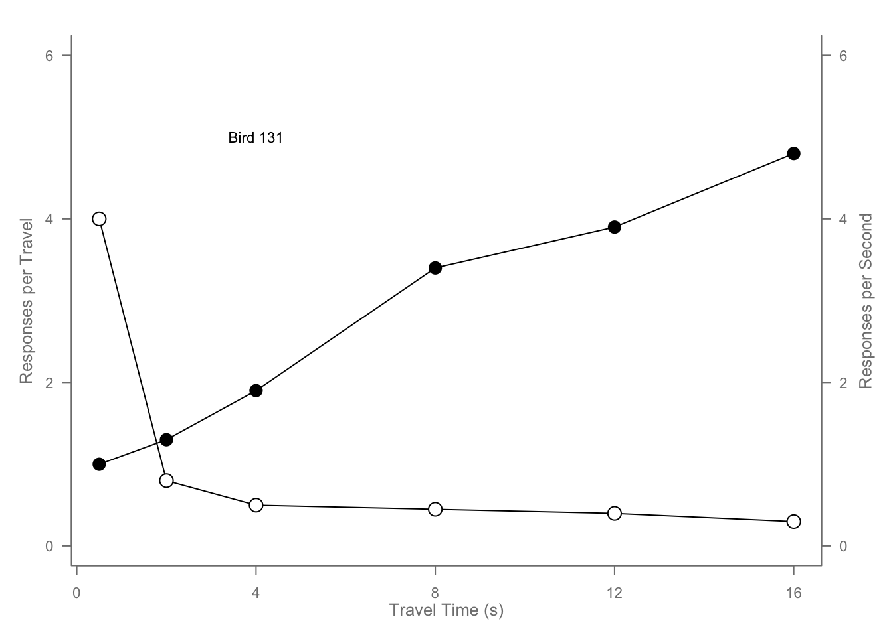
6.3 ggplot2
For a more complete guide see the book and for a more complete reference see the documentation.
To get started, the only thing your data needs to be is a) be, b) a dataframe, c) “long”, and d) properly classed. By properly classed I don’t mean it needs to be the diamonds dataset, I mean that each column in your dataframe should be explicitly cast as the datatype you intend it to be - as.factor() your factors and as.numeric() your numbers.
But we are gonna use diamonds because we are properly classed.
library(ggplot2)
pander::pander(
head(diamonds)
)| carat | cut | color | clarity | depth | table | price | x | y | z |
|---|---|---|---|---|---|---|---|---|---|
| 0.23 | Ideal | E | SI2 | 61.5 | 55 | 326 | 3.95 | 3.98 | 2.43 |
| 0.21 | Premium | E | SI1 | 59.8 | 61 | 326 | 3.89 | 3.84 | 2.31 |
| 0.23 | Good | E | VS1 | 56.9 | 65 | 327 | 4.05 | 4.07 | 2.31 |
| 0.29 | Premium | I | VS2 | 62.4 | 58 | 334 | 4.2 | 4.23 | 2.63 |
| 0.31 | Good | J | SI2 | 63.3 | 58 | 335 | 4.34 | 4.35 | 2.75 |
| 0.24 | Very Good | J | VVS2 | 62.8 | 57 | 336 | 3.94 | 3.96 | 2.48 |
# But we don't want to plot 50000 points every time so
diamond_sub <- diamonds[sample(1:nrow(diamonds), 500, replace=FALSE),]6.3.1 Layers
What is a statistical graphic? The good ole boys Wilkinson and Wickham tell us that they are
- Mappings from data to aesthetic attributes (colour, shape, size)
- Of geometric objects (points, lines bars)
- On a particular coordinate system
- Perhaps after a statistical transformation
We’ll follow their lead. In ggplot, that combination of things forms a layer. The terminology in ggplot is
- aes - aesthetic mappings
- geom - geometric objects
- scale - …scales
- stat - statistical transformations
Reordered, the flow of information in ggplot2 is:
- data is attached to the ggplot call,
- mapped by aes, and
- transformed by stat before being passed to a
- geom,
- which is placed, sized, and colored according to its relevant scales
- then ta-da! rendered plot.
6.3.2 (aes)thetic mappings
Lets get ahead of ourselves and make a plot because we haven’t made one yet and our console is whining in the backseat.
g <- ggplot(diamond_sub, aes(x=carat, y=price))+
geom_point()
g
We made a ggplot object named “g” that is attached to the dataframe “diamond_sub” g <- ggplot(diamond_sub, and has the aesthetic parameters “x” and “y” mapped to the columns “carat” and “price,” respectively aes(x=carat, y=price)). Then we added + another element to our plot, geom_point() which tells us that we want our aesthetic mapping represented geometrically as points. Note that we have to add parentheses to tell R that we want that function evaluated even if we don’t pass any arguments. We then rendered the plot by calling the variable name g.
Each geom (or more precisely, each stat, but we’ll get to that in a bit) has a certain subset of aes’s that apply to it (don’t we all).
You can list all aes’s with
ggplot2:::.all_aesthetics## [1] "adj" "alpha" "angle" "bg" "cex"
## [6] "col" "color" "colour" "fg" "fill"
## [11] "group" "hjust" "label" "linetype" "lower"
## [16] "lty" "lwd" "max" "middle" "min"
## [21] "pch" "radius" "sample" "shape" "size"
## [26] "srt" "upper" "vjust" "weight" "width"
## [31] "x" "xend" "xmax" "xmin" "xintercept"
## [36] "y" "yend" "ymax" "ymin" "yintercept"
## [41] "z"or by doing the same on the proto version of any geom, like
ggplot2:::GeomPoint## <ggproto object: Class GeomPoint, Geom>
## aesthetics: function
## default_aes: uneval
## draw_group: function
## draw_key: function
## draw_layer: function
## draw_panel: function
## extra_params: na.rm
## handle_na: function
## non_missing_aes: size shape colour
## optional_aes:
## parameters: function
## required_aes: x y
## setup_data: function
## use_defaults: function
## super: <ggproto object: Class Geom>Note the “required_aes” and “non_missing_aes” for required and optional aes, respectively.
In general, you’ll always be able to map color (or colour, color is just an alias), x, and y. Commonly you’ll also be able to map fill for things that take up area.
Aesthetics declared in the original call to ggplot, unless otherwise specified, apply to each added element. Within a given element, you can add, override, or remove aesthetics, like so:
# Add coloring by ... color ... to the points
ggplot(diamond_sub, aes(x=carat, y=price))+
geom_line()+
geom_point(aes(color=color))
You can make the same plot (except for order) in a worse way by specifying color in the base ggplot call and removing it with NULL from the lines.
ggplot(diamond_sub, aes(x=carat, y=price, color=color))+
geom_point()+
geom_line(aes(color=NULL))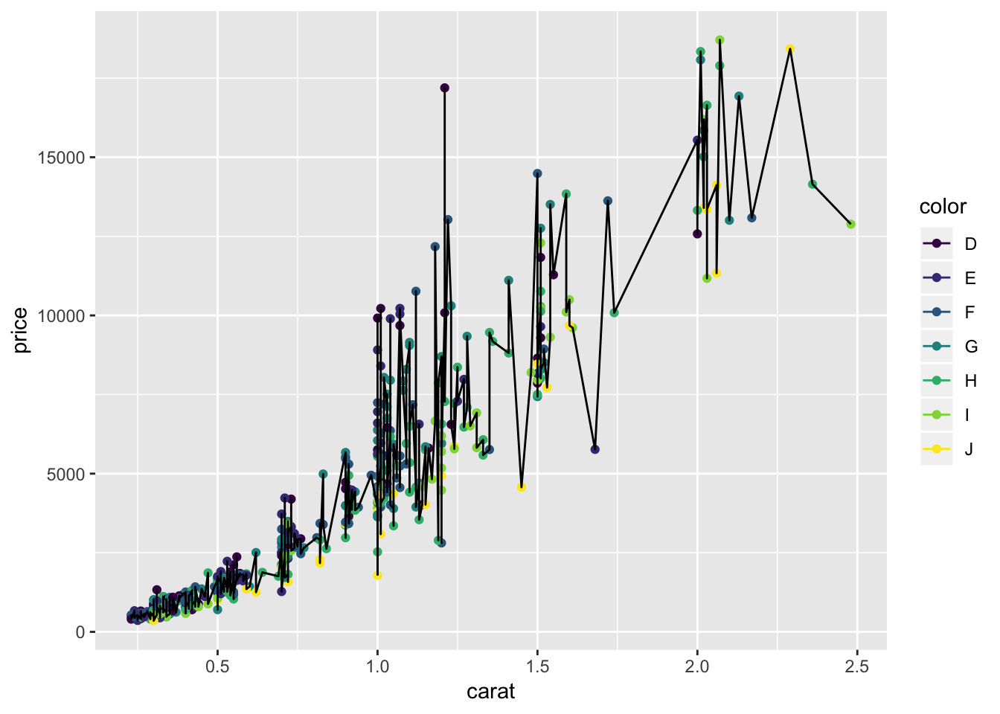
Damn those are some ugly graphs, but this guide is about “can” not “should.” Notice how the order in which you add elements matters - the points are ‘on top of’ the lines in the first plot because the geom_point call came second, and vice-versa in the second plot.
You can also perform operations within the aes(), say if you want to fatten out a ribbon without it being a big goofy line
# The economics dataset with an added 'epoch' factor to recolor every 100 points.
economics_epoch <- economics
economics_epoch$epoch <- as.factor(c(rep(1,100),
rep(2,100),
rep(3,100),
rep(4,274)))
ggplot(economics_epoch, aes(x=date,color=epoch))+
geom_line(aes(y=unemploy), size=10)So goofy. Compared to…
ggplot(economics_epoch, aes(x=date,fill=epoch))+
geom_ribbon(aes(ymax=unemploy,ymin=unemploy-1000))Also, it’s common to confuse “fill” and “color.” You can see the difference:
ggplot(economics_epoch, aes(x=date,color=epoch))+
geom_ribbon(aes(ymax=unemploy,ymin=unemploy-1000))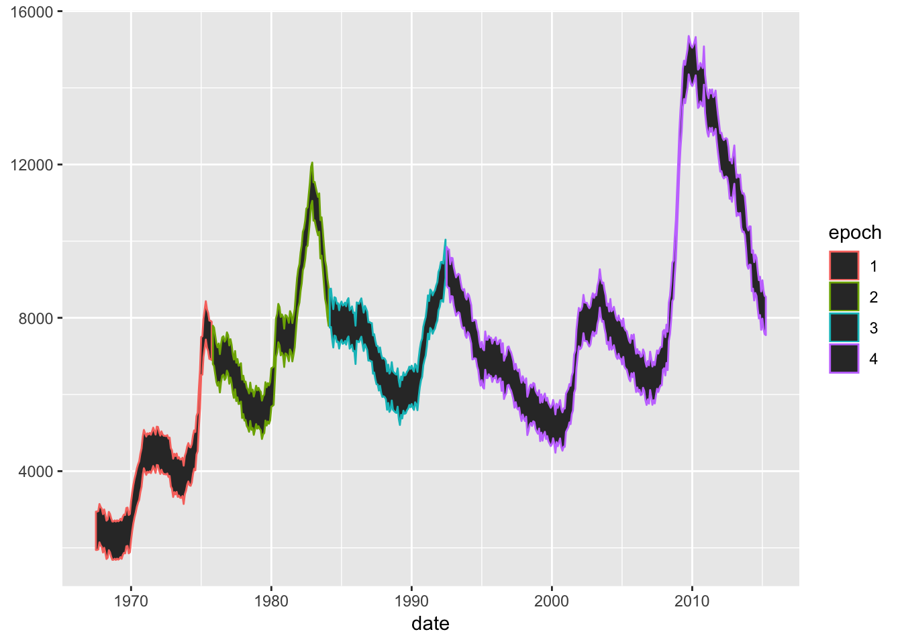
And if you wanted to use both for different reasons because you’re a maniac
ggplot(economics_epoch, aes(x=date,color=epoch, fill=rev(epoch)))+
geom_ribbon(aes(ymax=unemploy,ymin=unemploy-1000))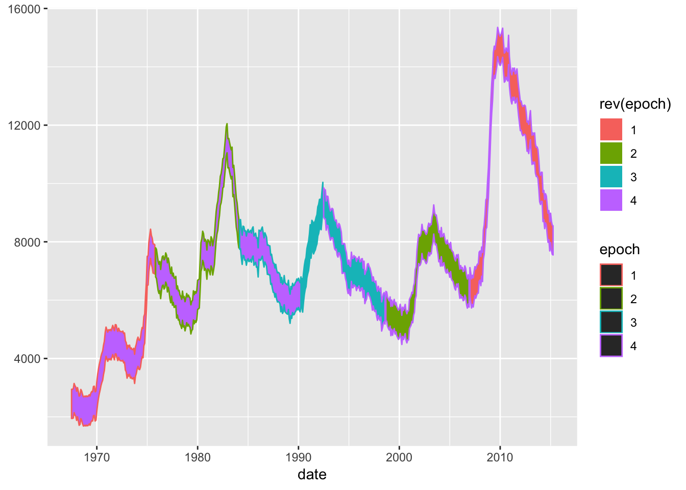
You can also assign single values to an aes, though as we’ll see, it’s usually better to do that in a scale. You can give colors using color names or RGB hex values passed outside the aes argument - remember the aes is a mapping from the data to the geom! Assigning a fill within the aes argument assumes you mean that your hex value is a level in a factor (and who could blame it), but assigning it outside the aes argument means that you are sending that color to the geom directly.
ggplot(economics_epoch, aes(x=date))+
geom_ribbon(aes(ymax=unemploy,ymin=unemploy-1000), fill="#F0A125")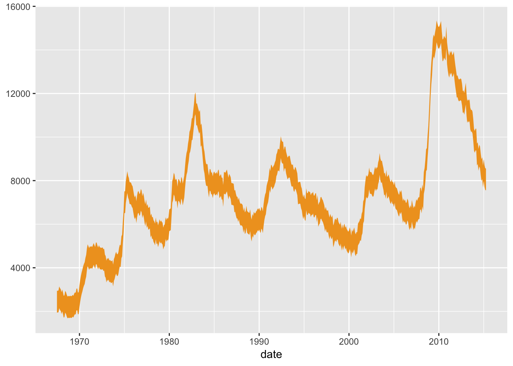
ggplot will do its best to figure out how to split your data when combining multiple aesthetics, but here is one extra trick:
Say you want to split your data by two factors but don’t want to make a new column in your dataframe or color them. You can use the interaction() function like (ignore the use of theme(), we’ll get to that):
# we have two factors, cut and color, with the levels...
levels(diamond_sub$cut)## [1] "Fair" "Good" "Very Good" "Premium" "Ideal"levels(diamond_sub$color)## [1] "D" "E" "F" "G" "H" "I" "J"# and we want to make a plot with all their permutations:
ggplot(diamond_sub, aes(x=interaction(cut,color)))+
geom_bar()+
theme(
axis.text.x = element_text(angle=90)
)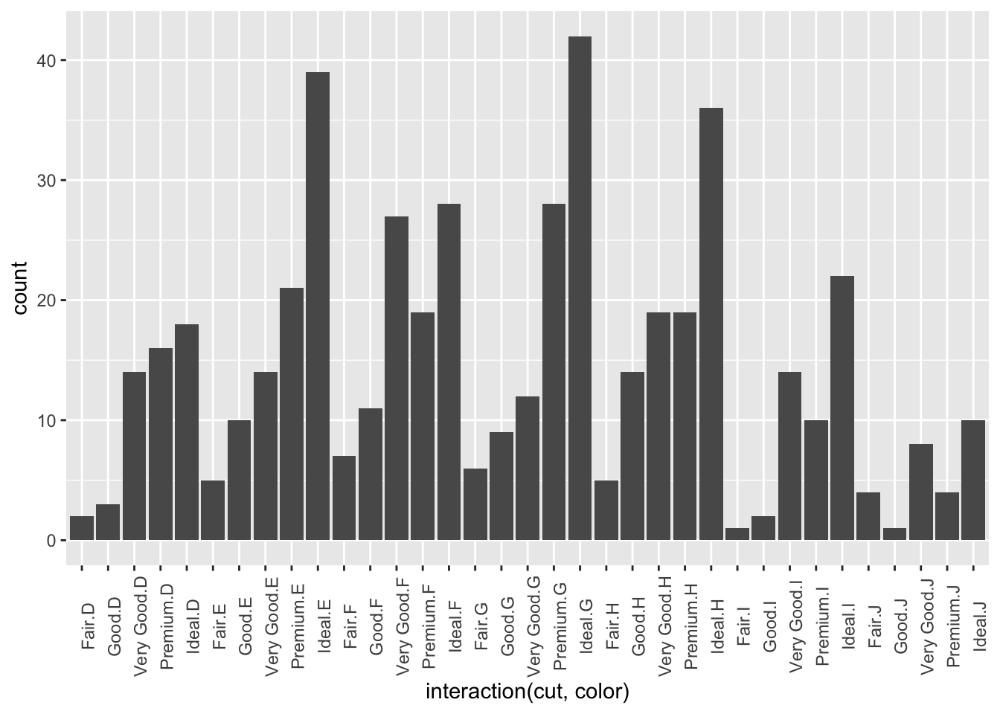
I’ll give ya a list of all the aesthetics by shapes once we know what a stat is.
6.3.3 Geoms & Stats
I’ve already thrown a lot of geoms your way, but there are a lot more where that came from. I’m not going to do a complete runthrough of all of them here because most of their use is relatively obvious once you know how to manipulate aesthetics, but if you’re hungry for it someone put together a nice graphical summary of the available geoms:

This section is more concerned with the relationship between geoms and stats. Behind every great geom there’s a great stat. Stats act as intermediary functions between the incoming data and the geom - put another way, they relate the aes to the geom. Most common geoms just use the stat_identity that returns the number, but many can accept a stat="stat_as_string" argument. Below is a table of geoms, their default stats, and their related aesthetic options (from page 57 of the ggplot book)

A few examples of how to represent frequency data by manipulating stat:
A classic histogram
ggplot(diamond_sub, aes(x=price))+
geom_histogram(color="white", bins = 20)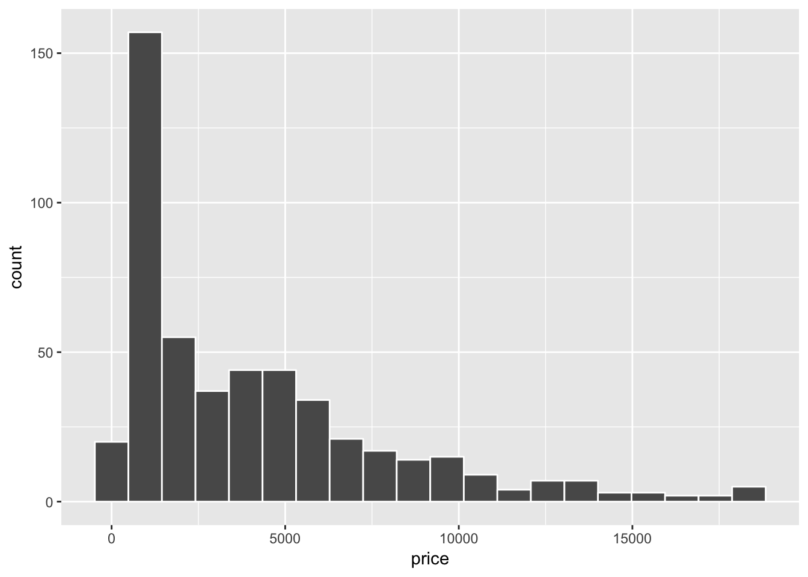
This is equivalent to the call
ggplot(diamond_sub, aes(x=price))+
stat_bin(geom="bar", color="white", bins = 20)
But calling it this way allows us to use whatever geom we’d like
ggplot(diamond_sub, aes(x=price))+
stat_bin(geom="step", color="blue", bins = 20)+
stat_bin(geom="point", color="red", bins = 20)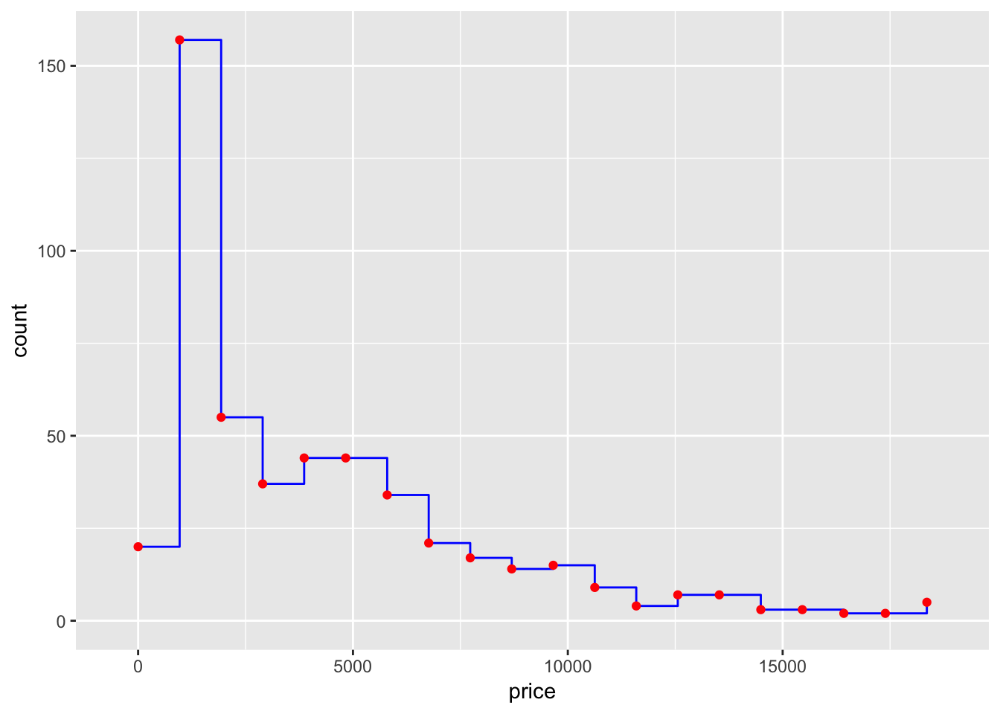
If instead one wants the scale as a density,
ggplot(diamond_sub, aes(x=price))+
geom_histogram(aes(y=..density..), color="white", bins = 20)Other stats can be accessed by calling another geom that uses it as their default. We can estimate a density kernel like:
ggplot(diamond_sub, aes(x=price))+
geom_histogram(aes(y=..density..), color="white", bins = 20)+
geom_density()Yikes, our kernel is a little soft. We can adjust the bandwidth of the kernel (as its standard deviation)…
ggplot(diamond_sub, aes(x=price))+
geom_histogram(aes(y=..density..), color="white", bins = 20)+
geom_density(bw=300)How about some two dimensional data? I need lines. thankfully we can directly perform linear models in ggplot.
ggplot(diamond_sub, aes(x=table, y=depth))+
geom_point(alpha=0.2)+
geom_smooth(method="lm", color="red", se=FALSE)And if you want your confidence intervals right there with ya too
ggplot(diamond_sub, aes(x=depth, y=table))+
geom_point(alpha=0.2)+
geom_smooth(color="red", method="lm", level=0.99)We can also perform a few other smoothing/estimation operations, for example
ggplot(diamond_sub, aes(x=table, y=depth))+
geom_point(alpha=0.2)+
geom_smooth(method="loess", color="red")And with a bit of convincing, ggplot will even do logistic regression for us
ggplot(midwest, aes(x=percbelowpoverty, y=inmetro))+
geom_point(alpha=0.1)+
geom_smooth(method="glm", method.args=list(family="binomial"), color="red")As we saw before, most geoms can be controlled directly by calling their related stat. When doing so, we can select which geom we’d like to plot our error bars with.
ggplot(economics, aes(x=date, y=unemploy))+
geom_line(color="gray")+
stat_smooth(geom="linerange", size = 0.5, method="loess", level=0.99)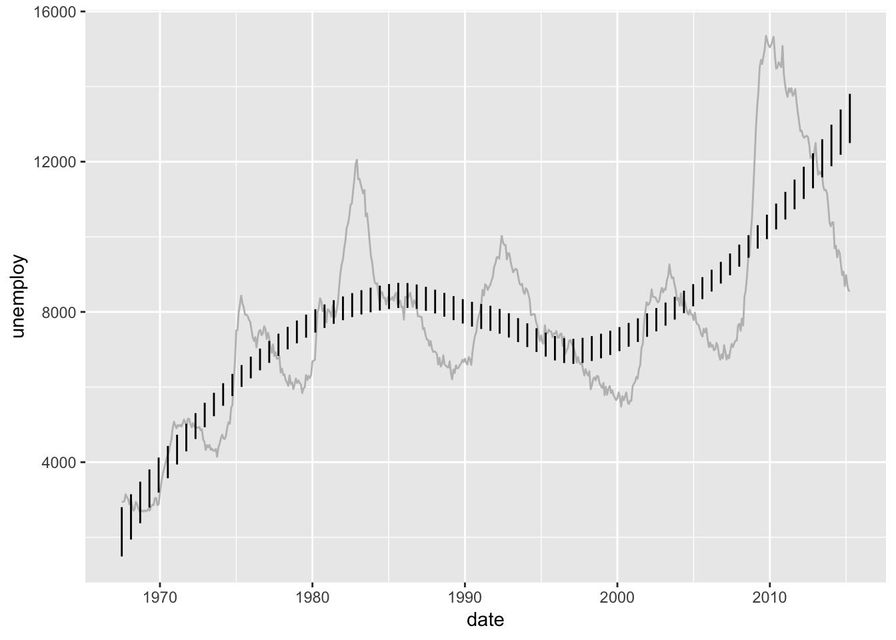
How about some denser data. Remember our very first plot? There’s a whole lot more data that we randomly ignored. What if we weren’t some fraudulators and didn’t conveniently “lose our data?”
ggplot(diamonds, aes(x=carat, y=price))+
geom_point(alpha=0.02)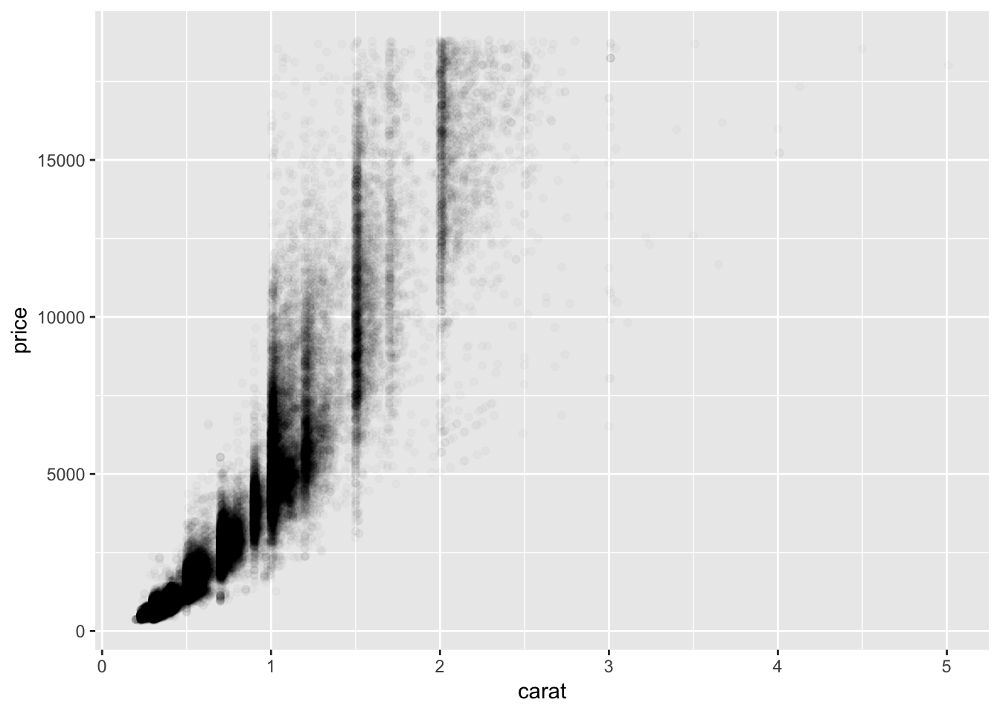
Wow that’s cool and smoky and all, but is it a good representation of the data?. If we summarize it with some hexagons …
ggplot(diamonds, aes(x=carat, y=price))+
geom_hex(bins=50)## Loading required package: methods
Turns out it’s really easy to misrepresent your data if it’s not presented in a quantitatively meaningful way. Most of the density of our plot is in the lowest left section. Let’s try one more visualization method. Notice the ..density.. notation. Since density is a computed function, it is wrapped in a sorta weird half ellipse to make sure it doesn’t conflict with the dataframe in case it has a variable called density.
ggplot(diamonds, aes(x=carat, y=price))+
scale_color_distiller(palette="Spectral")+
stat_density_2d(geom = "point", aes(size = ..density.., color= ..density..), alpha=0.6, n=75, contour = F)+
theme(panel.background = element_rect(fill="#000000"),
panel.grid = element_blank(),
legend.position = "none")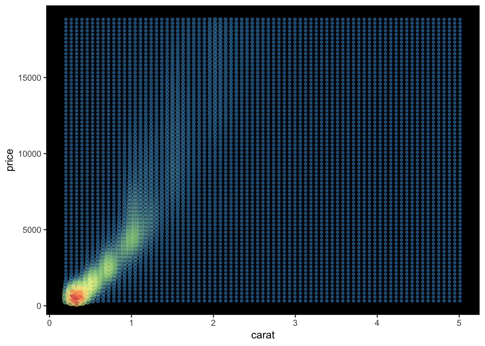
ggplot(diamonds, aes(x=carat, y=price))+
scale_color_distiller(palette="Spectral")+
stat_density_2d(geom = "point", aes(size = ..density.., color= ..density.., alpha= ..density..), n=75, contour = F)+
theme(panel.background = element_rect(fill="#000000"),
panel.grid = element_blank(),
legend.position = "none")6.3.4 Position
Is also important but I’m not covering it formally right now. ve most deel vis it.
Until I do, if your bar charts aren’t looking right just monkey around on google with the phrase dodge
ggplot(diamond_sub, aes(x=price, fill=cut))+
geom_histogram()## `stat_bin()` using `bins = 30`. Pick better value with `binwidth`.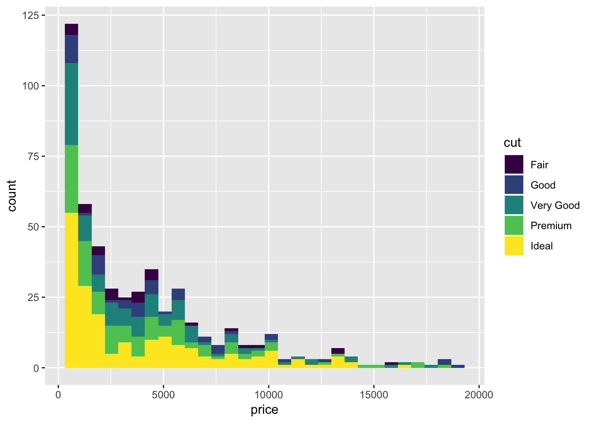
ggplot(diamond_sub, aes(x=price, fill=cut))+
geom_histogram(position="dodge")## `stat_bin()` using `bins = 30`. Pick better value with `binwidth`.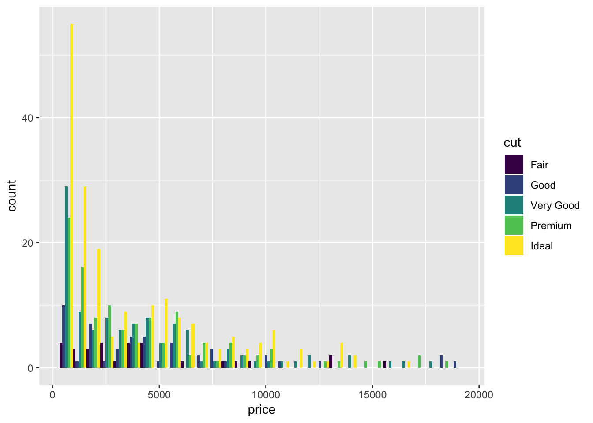
and maybe jitter
ggplot(diamond_sub, aes(x=cut, y=price))+
geom_point()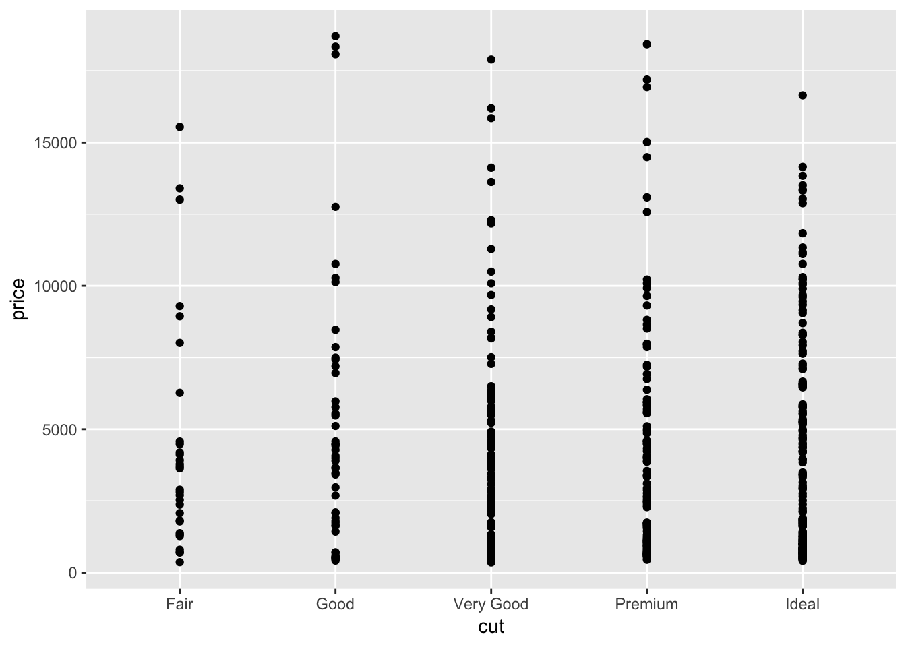
ggplot(diamond_sub, aes(x=cut, y=price))+
geom_point(position=position_jitter(width=0.25))and maybe one more with fill
ggplot(diamonds, aes(x=price, fill=cut))+
geom_histogram(bins=50)
ggplot(diamonds, aes(x=price, fill=cut))+
geom_histogram(bins=50, position="fill")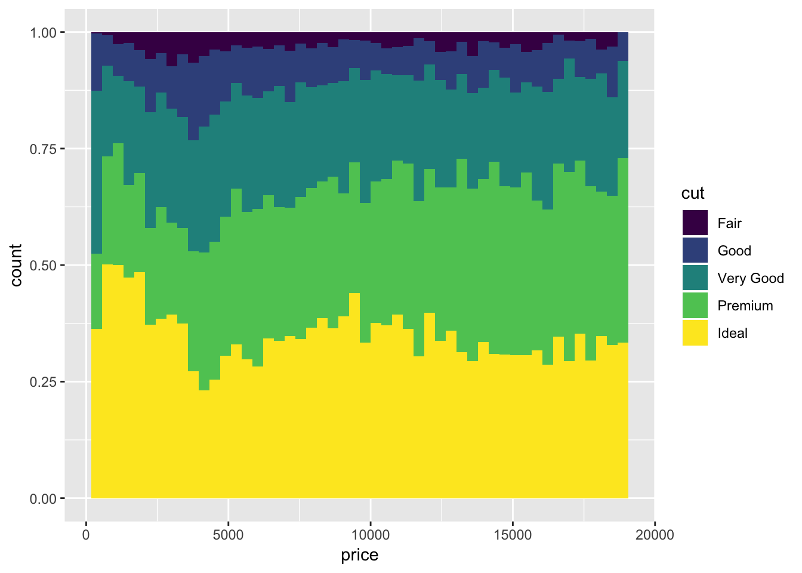
6.3.5 Scales
We have led our little geometric lambs to water, but what good is it if we don’t own the land?
Every aesthetic component, including axes, is a scale. There are two types of scales, continuous and discrete. With scales, we control things like
- Color
- Breaks - if it’s an axis, where do we have ticks, if it’s a legend, what is marked in the legend?
- Labels - what do we call our breaks?
- Limits
- Expand - how much extra room we leave on the edges
- Transformations - log scales & arbitrary transformations
- Position - If an axis, reposition top, bottom, left, or right depending on whether it’s an x or y axis.
The general syntax to modify your scale is scale_aesthetic_continuous or scale_aesthetic_discrete, for example scale_x_continuous or scale_fill_discrete.
For now, not going to spend much time on this because they are relatively self explanatory, but a few specific useful examples
6.3.5.1 Axis limits
If you want to set axis limits manually, rather than allowing ggplot to figure them out for you…
ggplot(diamond_sub, aes(x=table, y=depth))+
geom_point(alpha=0.8, position=position_jitter(width=.25))+
geom_smooth(method="loess", color="red")+
scale_x_continuous(limits=c(56, 60))## Warning: Removed 137 rows containing non-finite values (stat_smooth).## Warning: Removed 204 rows containing missing values (geom_point).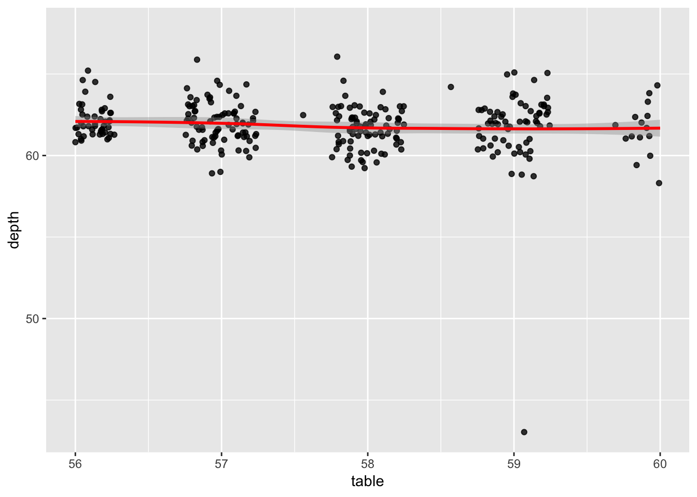
6.3.5.2 Color Brewer
If you don’t want to manually input colors and want to just follow best principles, color brewer is a godsend. Visit the color brewer website to see available color palettes. Or we can use a tool from RColorBrewer (to be covered in extensions):
brewplot <- RColorBrewer::display.brewer.all()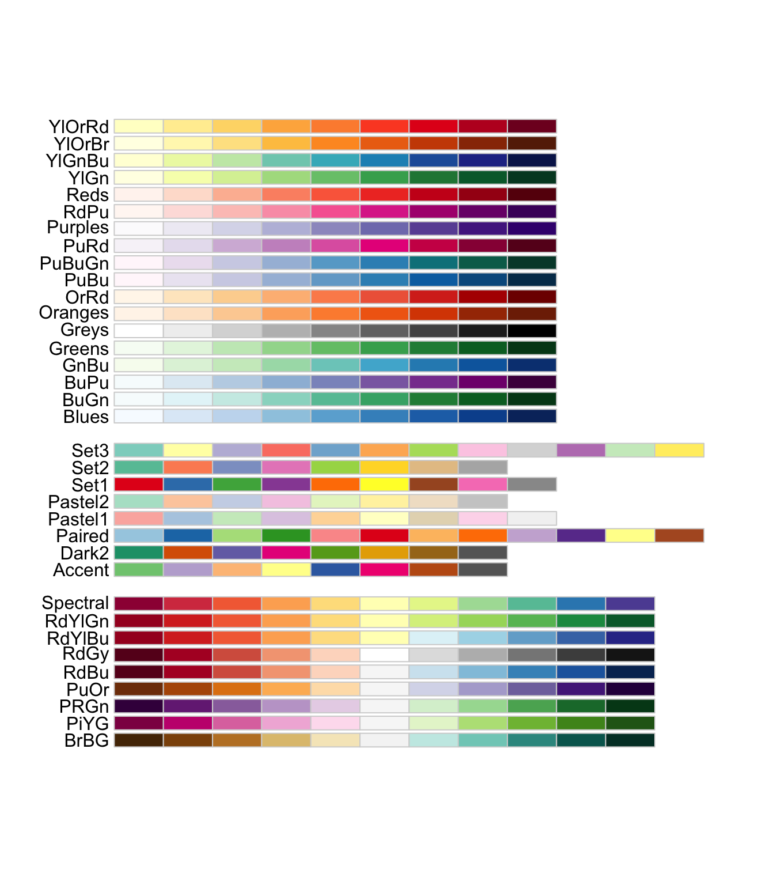
To simply drop it in to any plot:
ggplot(economics_epoch, aes(x=date,fill=epoch))+
geom_ribbon(aes(ymax=unemploy,ymin=unemploy-1000))+
scale_fill_brewer(palette="Set1")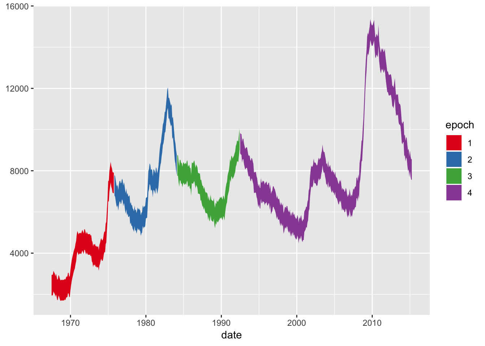
And the continuous variant is called “Distiller”
ggplot(diamond_sub, aes(x=carat,y=price,color=price))+
geom_point()+
scale_color_distiller(palette="RdPu")+
theme_dark()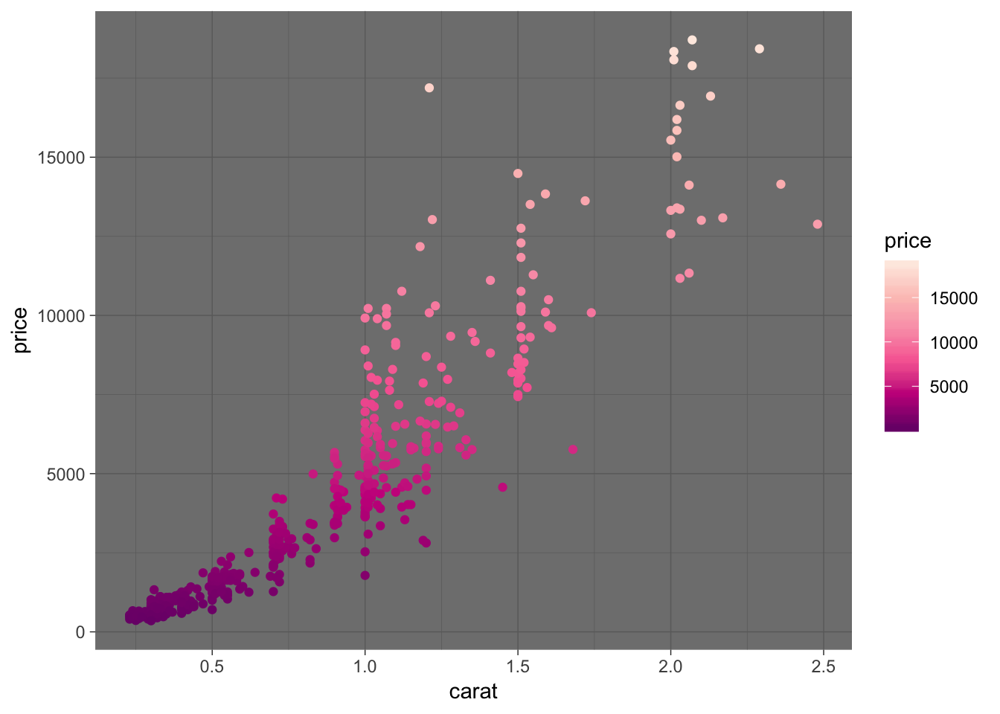
6.3.5.3 Manual Colors
To use your own colors, use scale_color_manual or scale_fill_manual (todo, trying to get some actually cool stuff in here)
6.3.6 Facets
(Skipping detailed description for now… but)
ggplot(diamonds, aes(x=carat, y=price))+
stat_density_2d(geom = "point", aes(size = ..density.., color = ..density..),
n=10, contour = F)+
scale_color_distiller(palette="RdPu")+
facet_grid(cut~color)6.3.7 Coordinate Systems
(skipping for now)
6.3.8 Themes
The theme() command allows you fine control over each plot element. There are a few general types of plot elements:
- line
- rect
- text
That are grouped by where they are used, for example in
- axis
- legend
- panel - individual plotting areas, for example each facet in a facet grid
- plot - the entire plotting area
- strip - titles on facets
Settings are inherited hierarchically. For example, one can set the size of all text, the size of all axis titles, or just the x axis title. Reference to each is straightforward:
text = element_text(), axis.title = element_text(), axis.title.x = element_text()
ggplot comes with a few built-in themes:
ggplot(diamond_sub, aes(x=carat,y=price,color=price))+
geom_point()+
theme_minimal()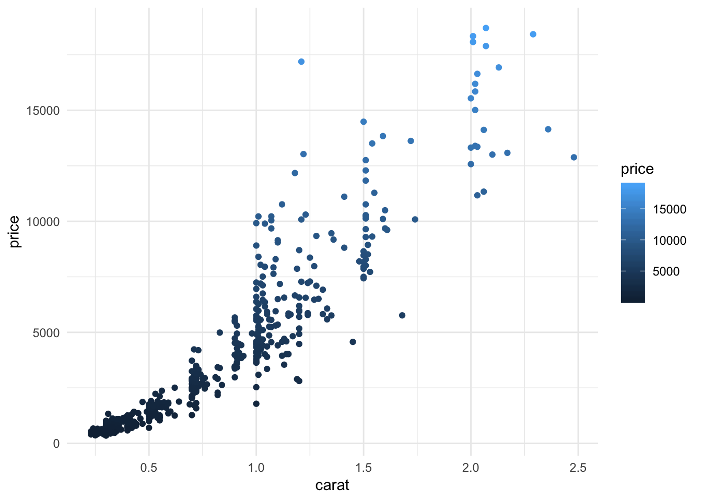
ggplot(diamond_sub, aes(x=carat,y=price,color=price))+
geom_point()+
theme_void()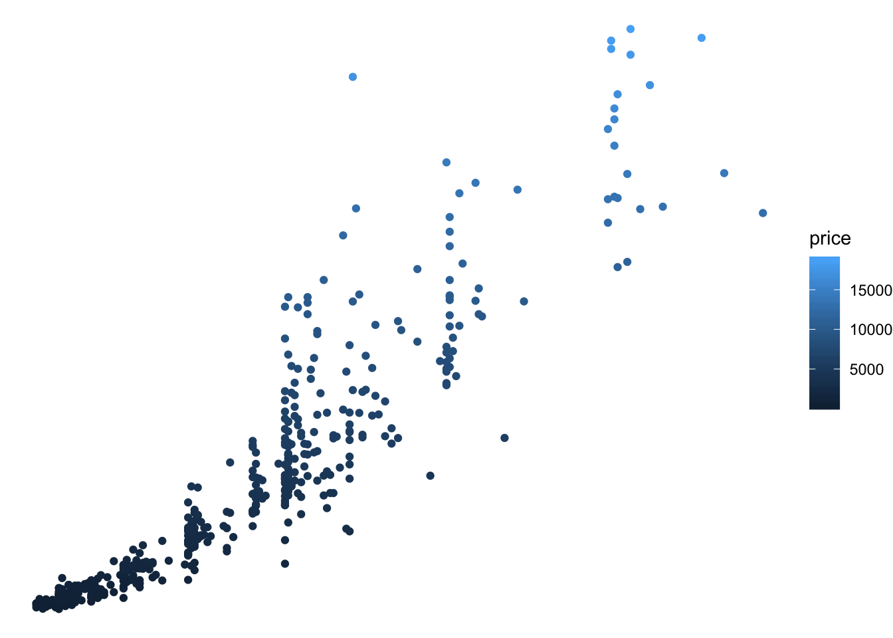
6.3.8.1 Removing elements
Sometimes you want to be all draped in pearls and roses, and other times you just need your black turtleneck. To remove items, replace them with a blank element:
ggplot(diamond_sub, aes(x=carat,y=price,color=price))+
geom_point()+
theme(
panel.background = element_blank(),
panel.grid = element_blank(),
axis.text = element_blank(),
axis.ticks = element_blank(),
axis.title = element_blank(),
axis.line = element_line(),
legend.position = "none"
)And sometimes you just want to make a mockery of your audience’s eyes like you’ve got your hands in the MS paint bucket again. Notice how since we are in a “g” rammar of “g” raphics (“plot”) (“2”) things work as we expect them to
ggplot(diamond_sub, aes(x=carat,y=price))+
geom_point(color="pink")+
theme(
panel.background= element_rect(fill="yellow"),
panel.grid = element_blank(),
axis.text = element_blank(),
axis.ticks = element_blank(),
axis.title = element_blank(),
axis.line = element_line(),
legend.position = "none"
)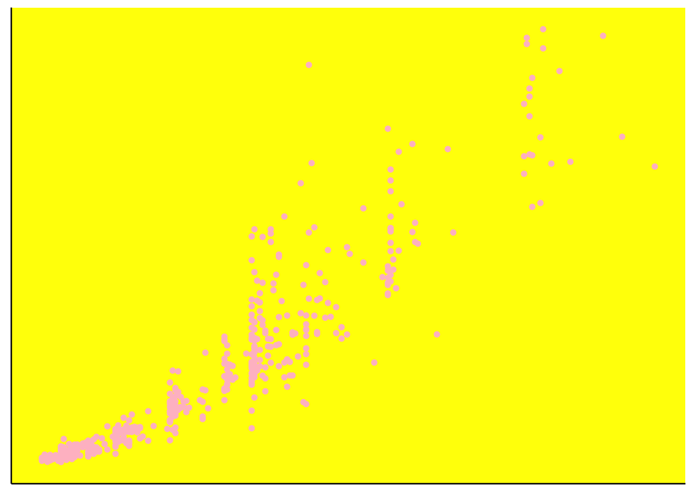
A useful tool here is the direct specification of sizes with units. The general syntax for units are unit(number, “unit_type”), for example if you are trying to shout about how big those numbers are and dont understand what axis ticks are for
ggplot(diamond_sub, aes(x=carat,y=price))+
geom_point()+
theme(
panel.background= element_blank(),
panel.grid = element_blank(),
axis.text = element_text(size=unit(24,"pt")),
axis.ticks = element_line(arrow=arrow(type="closed")),
axis.title = element_blank(),
axis.line = element_line(),
legend.position = "none"
)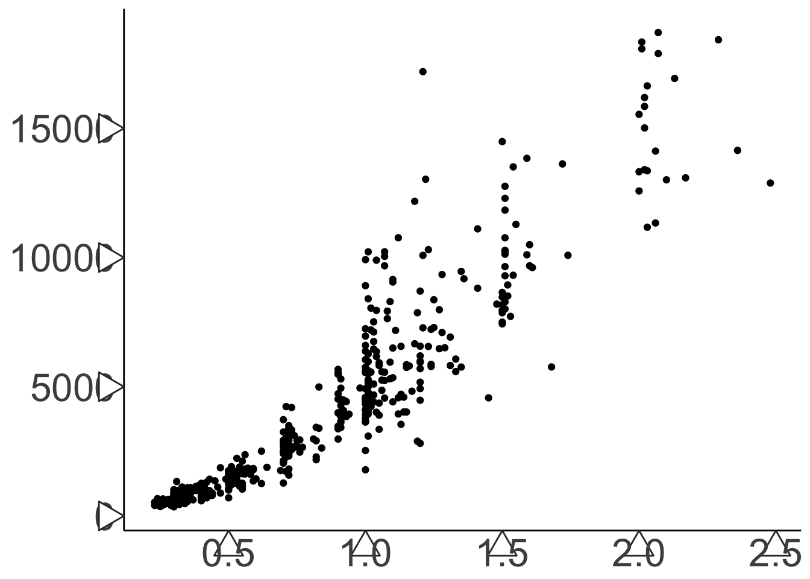
Uh oh, who is screwing with our medicine? Our text is now hopelessly buried beneath our arrows. We can fix that by adjusting our margins. The margins are set in the order top, right, bottom, left. Since that doesn’t really make sense, they advise you to remember the phrase “trouble” and that actually works. Notice the inheritance. Even though we make settings for the x and y axis text specifically, it still retains our 24 point mistake. Margins can also be used with the plot.background to eliminate excess space, and can be set to negative numbers.
ggplot(diamond_sub, aes(x=carat,y=price))+
geom_point()+
theme(
panel.background= element_blank(),
panel.grid = element_blank(),
axis.text = element_text(size=unit(24,"pt")),
axis.text.x = element_text(margin= margin(20,0,0,0, unit="pt")),
axis.text.y = element_text(margin= margin(0,20,0,0, unit="pt")),
axis.ticks = element_line(arrow=arrow(type="closed")),
axis.title = element_blank(),
axis.line = element_line(),
legend.position = "none"
)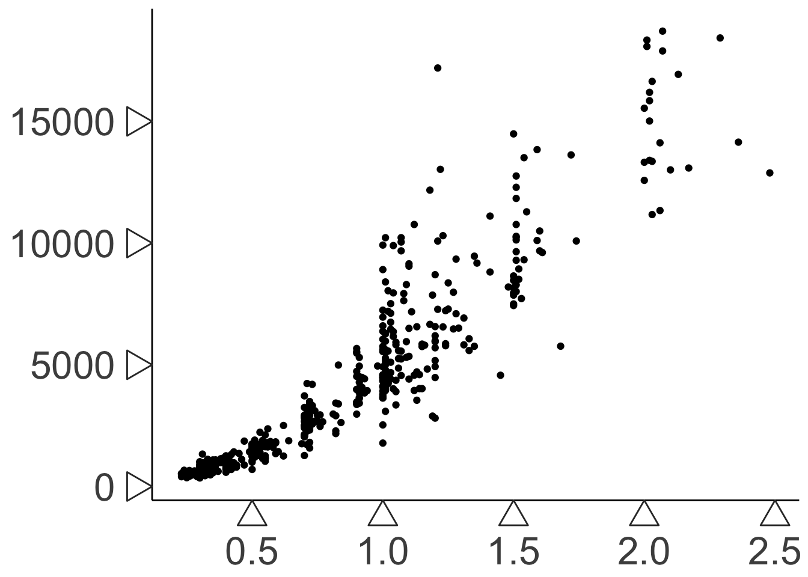
6.3.9 Extensions
ggplot has lots of extensions. But we’ll leave it at that for now….
6.4 Lattice
- lattice stuff here
6.5 Rendering
Having plots in your R environment is one thing, but getting them out into the world or stuffed into your papers is quite another. Without explicitly specifying certain parameters like sizes and positions, your figure will end up with text crowded across the screen or nonevident without microscopy. It’s always a good idea to make those specifications explicit with the theme() function, but some things require that ggplot has knowledge about the rendering environment.
6.5.1 Using Graphics Engines
- bring over from Data chapter
6.5.2 ggsave
What happens when we just try to export our figure window?
# Scales lets us change the y axis numbers from scientific notation to decimal notation
library(scales)
g.price_density <- ggplot(diamond_sub, aes(x=price, y=..density.., fill=cut))+
geom_density(position="stack")+
scale_fill_brewer(palette="Set1", guide=guide_legend(title="Cut"))+
scale_y_continuous(name="Density", labels=comma)+
scale_x_continuous(name="Price")+
theme_minimal()+
theme(
panel.grid.major = element_blank(),
legend.position = c(.8,.65)
)
# Saving figure by clicking "export" from figure windowGood god what have you done to the boy. Since the rendering is dependeng on the size of the plotting environment ggplot has rendered it into, our plot comes out looking very sad indeed.
The basic tool for exporting ggplot figures is the function ggsave. It allows us to explicitly specify the size, resolution, rendering engine, etc. Ggplot has many saving “devices,” or rendering engines, the basic categories of which are raster engines (like png) - which convert your plot into a series of pixels and color values, and vector engines (like pdf or svg) that leave the plot as a set of logical instructions. You should preserve your plots as vectors as long as you possibly can, as they are lossless representations of the image, and allow you to edit it by element in another program.
ggsave("price_density_plot.png", g.price_density,
path="guide_files", # you can use relative or absolute paths
device="png",
width=unit(6,"in"), height=unit(4,"in"),
dpi=300
)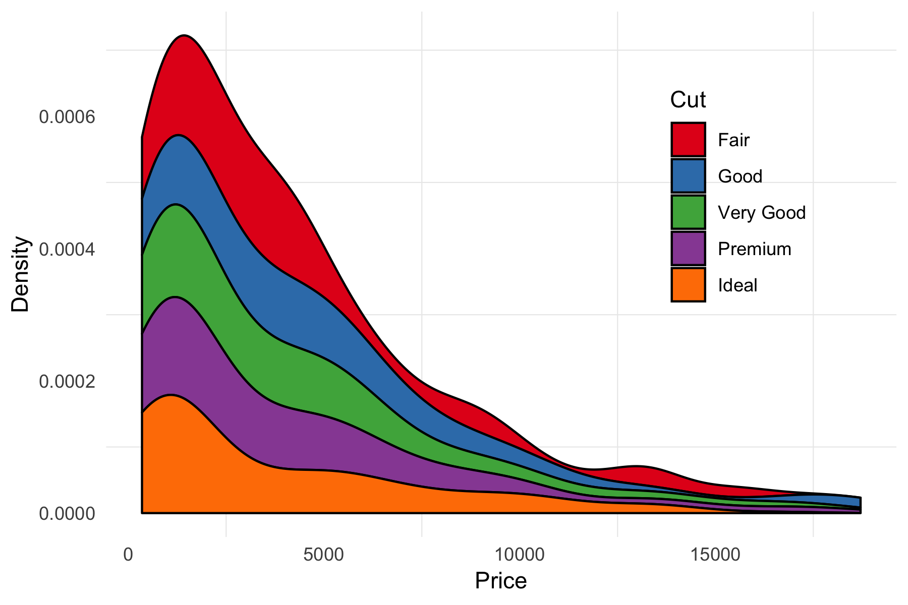 Much better.
6.6 Grid
Ok, we might know what a statistical plot is, but what is a ggplot? Ggplot follows the grid graphics model, which is a set of primitive graphical elements like circles, lines, rectangles, that have some notion of their position within a “viewport” (ggplot’s panels). GRaphical OBjects in grid are called “grobs,” and we can convert our plot to be able to directly manipulate its grobs.
g.grob <- ggplotGrob(g.price_density)Your plot’s layout information is in its layout, heights, and widths attributes. Each of the numbers in the layout matrix corresponds to a width (for the “t”(op), and “b”(ottom) columns), or height (for the “l” and “r”). Each grob has its outer extent specified by these values, so the background has its top at position 1, left at position 1, bottom at 10 and right at 7 - the largest values of each, predictably. By default, heights and widths of undeclared elements are “null” or “grobheight” units that depend on the size of the viewport. You can set them explicitly as you might expect with g.grob$heights[5] <- unit(5,"in") or whatever. This becomes critical for ensuring axes across multiple plots are the same size.
The “children” or “grobs” of the main grob object contain each of the literal graphical objects, and they behave just like the parent.
g.grob$layout## t l b r z clip name
## 18 1 1 10 7 0 on background
## 1 5 3 5 3 5 off spacer
## 2 6 3 6 3 7 off axis-l
## 3 7 3 7 3 3 off spacer
## 4 5 4 5 4 6 off axis-t
## 5 6 4 6 4 1 on panel
## 6 7 4 7 4 9 off axis-b
## 7 5 5 5 5 4 off spacer
## 8 6 5 6 5 8 off axis-r
## 9 7 5 7 5 2 off spacer
## 10 4 4 4 4 10 off xlab-t
## 11 8 4 8 4 11 off xlab-b
## 12 6 2 6 2 12 off ylab-l
## 13 6 6 6 6 13 off ylab-r
## 14 6 4 6 4 14 off guide-box
## 15 3 4 3 4 15 off subtitle
## 16 2 4 2 4 16 off title
## 17 9 4 9 4 17 off captiong.grob$heights## [1] 5.5pt 0cm
## [3] 0cm 0cm
## [5] 0cm 1null
## [7] sum(2.75pt, 1grobheight) 1grobheight
## [9] 0cm 5.5ptg.grob$widths## [1] 5.5pt 1grobwidth sum(1grobwidth, 2.75pt)
## [4] 1null 0cm 0cm
## [7] 5.5ptg.grob$grobs## [[1]]
## zeroGrob[plot.background..zeroGrob.2978]
##
## [[2]]
## zeroGrob[NULL]
##
## [[3]]
## absoluteGrob[GRID.absoluteGrob.2951]
##
## [[4]]
## zeroGrob[NULL]
##
## [[5]]
## zeroGrob[NULL]
##
## [[6]]
## gTree[panel-1.gTree.2933]
##
## [[7]]
## absoluteGrob[GRID.absoluteGrob.2945]
##
## [[8]]
## zeroGrob[NULL]
##
## [[9]]
## zeroGrob[NULL]
##
## [[10]]
## zeroGrob[NULL]
##
## [[11]]
## zeroGrob[NULL]
##
## [[12]]
## titleGrob[axis.title.x..titleGrob.2936]
##
## [[13]]
## titleGrob[axis.title.y..titleGrob.2939]
##
## [[14]]
## zeroGrob[NULL]
##
## [[15]]
## TableGrob (3 x 3) "guide-box": 2 grobs
## z cells name
## 99_281d9cc4e523da50b6c36763eedff87c 1 (2-2,2-2) guides
## 0 (1-3,1-3) legend.box.background
## grob
## 99_281d9cc4e523da50b6c36763eedff87c gtable[layout]
## zeroGrob[NULL]
##
## [[16]]
## zeroGrob[plot.subtitle..zeroGrob.2976]
##
## [[17]]
## zeroGrob[plot.title..zeroGrob.2975]
##
## [[18]]
## zeroGrob[plot.caption..zeroGrob.2977]We can see that deep down at the core of our plot is just a bunch of polygons. I arrived at these numbers by just listing them recursively (calling g.grob$grobs, seeing which one I needed, etc.). We can directly edit the graphical properties of these polygons (gp) as you might expect. We then
# We have to load the grid library to do some commands, might as well load it now
library(grid)
g.grob$grobs[[6]]$children[[3]]$children## (polygon[geom_ribbon.polygon.2911], polygon[geom_ribbon.polygon.2913], polygon[geom_ribbon.polygon.2915], polygon[geom_ribbon.polygon.2917], polygon[geom_ribbon.polygon.2919])g.grob$grobs[[6]]$children[[3]]$children[[1]]$gp$lwd <- 10
g.grob$grobs[[6]]$children[[3]]$children[[1]]$gp$fill <- "#FF51FD"
g.grob$grobs[[6]]$children[[3]]$children[[1]]$gp$col <- "yellow"
# grid.newpage() clears the current viewport (so your plots don't just keep stacking up)
# grid.draw() redraws our grob in the current viewport
grid.newpage()
grid.draw(g.grob)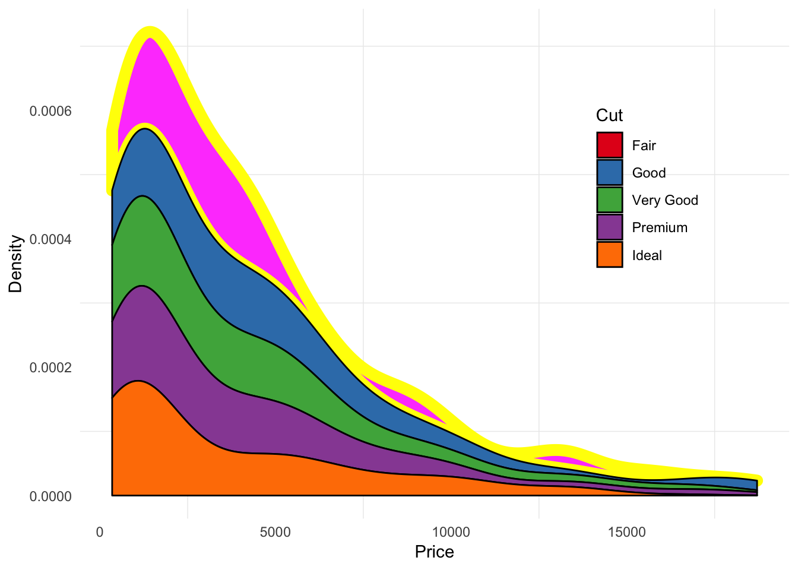
I have no idea why you keep wanting to do this to your plots. Lets try to use grid to arrange two plots that we couldn’t using ggplot alone. Let’s try to get density plots next to our scatterplot
# We'll need "gtable" to tread the grids like a table
library(gtable)
g.scatter <- ggplot(diamond_sub, aes(x=carat, y=price, color=cut))+
geom_point(size=0.5)+
scale_color_brewer(palette="Set1", guide=guide_legend(title="Cut"))+
scale_y_continuous(name="Price")+
scale_x_continuous(name="Carat")+
theme_minimal()+
theme(
legend.position=c(0.15,0.8),
legend.background = element_rect(fill="#EFEFEF")
)
g.density_x <- ggplot(diamond_sub, aes(x=carat, y=..density.., fill=cut))+
geom_density(position="stack")+
scale_fill_brewer(palette="Set1")+
#scale_x_continuous(expand=c(0,0))+
theme_void()+
theme(
legend.position="none"
)
g.density_y <- ggplot(diamond_sub, aes(x=price, y=..density.., fill=cut))+
geom_density(position="stack")+
scale_fill_brewer(palette="Set1")+
#scale_x_continuous(expand=c(0,0))+
coord_flip()+ # Flip the coordinates so x is y, y i x
theme_void()+
theme(
legend.position="none"
)
# Make our grobs
g.scatter_grob <- ggplotGrob(g.scatter)
g.density_x_grob <- ggplotGrob(g.density_x)
g.density_y_grob <- ggplotGrob(g.density_y)
# Add a row and a column to the scatterplot where we'll add our density plots
g.scatter_grob <- gtable_add_rows(g.scatter_grob,
unit(0.1,"npc"), # npc is a unit that's defined by the viewport
0) # position - we add to the top
g.scatter_grob <- gtable_add_cols(g.scatter_grob,
unit(0.1,"npc"), # npc is a unit that's defined by the viewport
-1) # position - we add on the right
# Let's check our layout
g.scatter_grob$layout## t l b r z clip name
## 18 2 1 11 7 0 on background
## 1 6 3 6 3 5 off spacer
## 2 7 3 7 3 7 off axis-l
## 3 8 3 8 3 3 off spacer
## 4 6 4 6 4 6 off axis-t
## 5 7 4 7 4 1 on panel
## 6 8 4 8 4 9 off axis-b
## 7 6 5 6 5 4 off spacer
## 8 7 5 7 5 8 off axis-r
## 9 8 5 8 5 2 off spacer
## 10 5 4 5 4 10 off xlab-t
## 11 9 4 9 4 11 off xlab-b
## 12 7 2 7 2 12 off ylab-l
## 13 7 6 7 6 13 off ylab-r
## 14 7 4 7 4 14 off guide-box
## 15 4 4 4 4 15 off subtitle
## 16 3 4 3 4 16 off title
## 17 10 4 10 4 17 off caption# Now we add the density grobs
g.scatter_grob <- gtable_add_grob(g.scatter_grob, g.density_x_grob,
t = 1, l = 4, b = 1, r = 7)
g.scatter_grob <- gtable_add_grob(g.scatter_grob, g.density_y_grob,
t = 4, l = 8, b = 7, r = 8)
grid.newpage()
grid.draw(g.scatter_grob)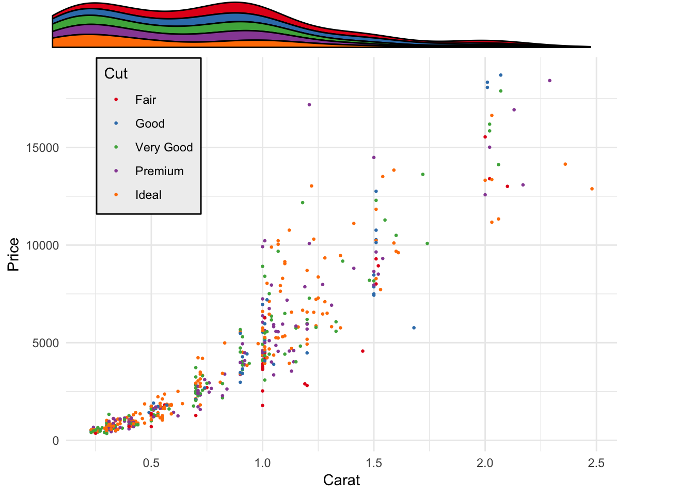
Uh oh, we’re a little misaligned. We can expand our x-axes to make the density plots fill the entire space
# We'll need "gtable" to tread the grids like a table
g.scatter <- ggplot(diamond_sub, aes(x=carat, y=price, color=cut))+
geom_point(size=0.5)+
scale_color_brewer(palette="Set1", guide=guide_legend(title="Cut"))+
scale_y_continuous(name="Price")+
scale_x_continuous(name="Carat")+
theme_minimal()+
theme(
legend.position=c(0.15,0.8),
legend.background = element_rect(fill="#EFEFEF")
)
g.density_x <- ggplot(diamond_sub, aes(x=carat, y=..density.., fill=cut))+
geom_density(position="stack")+
scale_fill_brewer(palette="Set1")+
scale_x_continuous(expand=c(0,0))+
theme_void()+
theme(
legend.position="none"
)
g.density_y <- ggplot(diamond_sub, aes(x=price, y=..density.., fill=cut))+
geom_density(position="stack")+
scale_fill_brewer(palette="Set1")+
scale_x_continuous(expand=c(0,0))+
coord_flip()+ # Flip the coordinates so x is y, y i x
theme_void()+
theme(
legend.position="none"
)
# Make our grobs
g.scatter_grob <- ggplotGrob(g.scatter)
g.density_x_grob <- ggplotGrob(g.density_x)
g.density_y_grob <- ggplotGrob(g.density_y)
# Add a row and a column to the scatterplot where we'll add our density plots
g.scatter_grob <- gtable_add_rows(g.scatter_grob,
unit(0.1,"npc"), # npc is a unit that's defined by the viewport
0) # position - we add to the top
g.scatter_grob <- gtable_add_cols(g.scatter_grob,
unit(0.1,"npc"), # npc is a unit that's defined by the viewport
-1) # position - we add on the right
# Let's check our layout
g.scatter_grob$layout## t l b r z clip name
## 18 2 1 11 7 0 on background
## 1 6 3 6 3 5 off spacer
## 2 7 3 7 3 7 off axis-l
## 3 8 3 8 3 3 off spacer
## 4 6 4 6 4 6 off axis-t
## 5 7 4 7 4 1 on panel
## 6 8 4 8 4 9 off axis-b
## 7 6 5 6 5 4 off spacer
## 8 7 5 7 5 8 off axis-r
## 9 8 5 8 5 2 off spacer
## 10 5 4 5 4 10 off xlab-t
## 11 9 4 9 4 11 off xlab-b
## 12 7 2 7 2 12 off ylab-l
## 13 7 6 7 6 13 off ylab-r
## 14 7 4 7 4 14 off guide-box
## 15 4 4 4 4 15 off subtitle
## 16 3 4 3 4 16 off title
## 17 10 4 10 4 17 off caption# Now we add the density grobs
g.scatter_grob <- gtable_add_grob(g.scatter_grob, g.density_x_grob,
t = 1, l = 4, b = 1, r = 7)
g.scatter_grob <- gtable_add_grob(g.scatter_grob, g.density_y_grob,
t = 4, l = 8, b = 7, r = 8)
grid.newpage()
grid.draw(g.scatter_grob)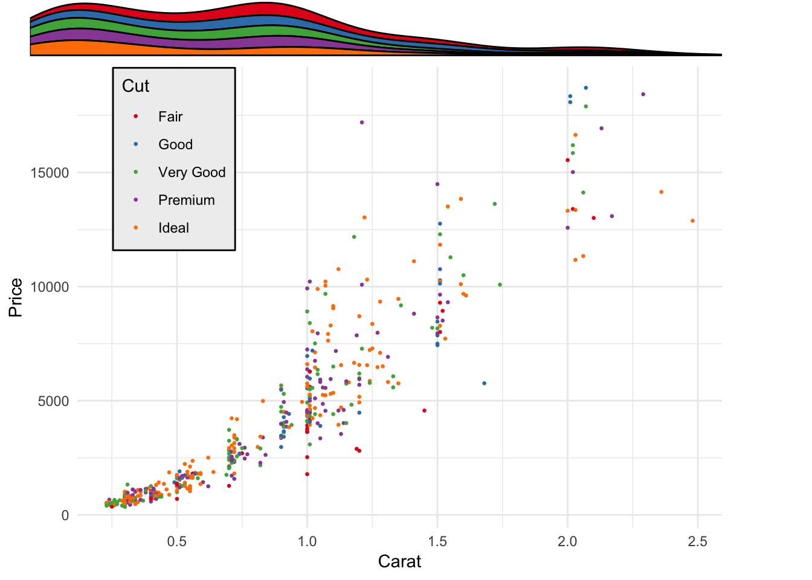
Todo: adding raw grobs
6.7 References
- https://www.stat.auckland.ac.nz/~paul/grid/grid.html
- https://www.stat.auckland.ac.nz/~paul/grid/doc/plotexample.pdf
- https://www.stat.auckland.ac.nz/~paul/Talks/CSIRO2011/rgraphics.pdf
- https://www.stat.auckland.ac.nz/~paul/Talks/JSM2013/grid.html
- https://www.stat.auckland.ac.nz/~paul/Talks/Rgraphics.pdf
- https://www.stat.auckland.ac.nz/~paul/grid/doc/interactive.pdf
- http://bxhorn.com/structure-of-r-graphs/
- https://www.slideshare.net/dataspora/a-survey-of-r-graphics